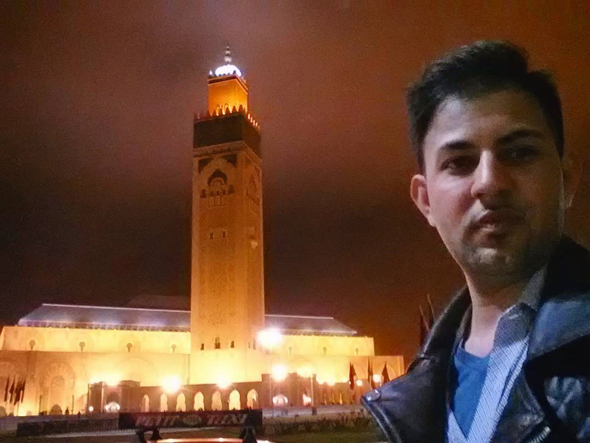
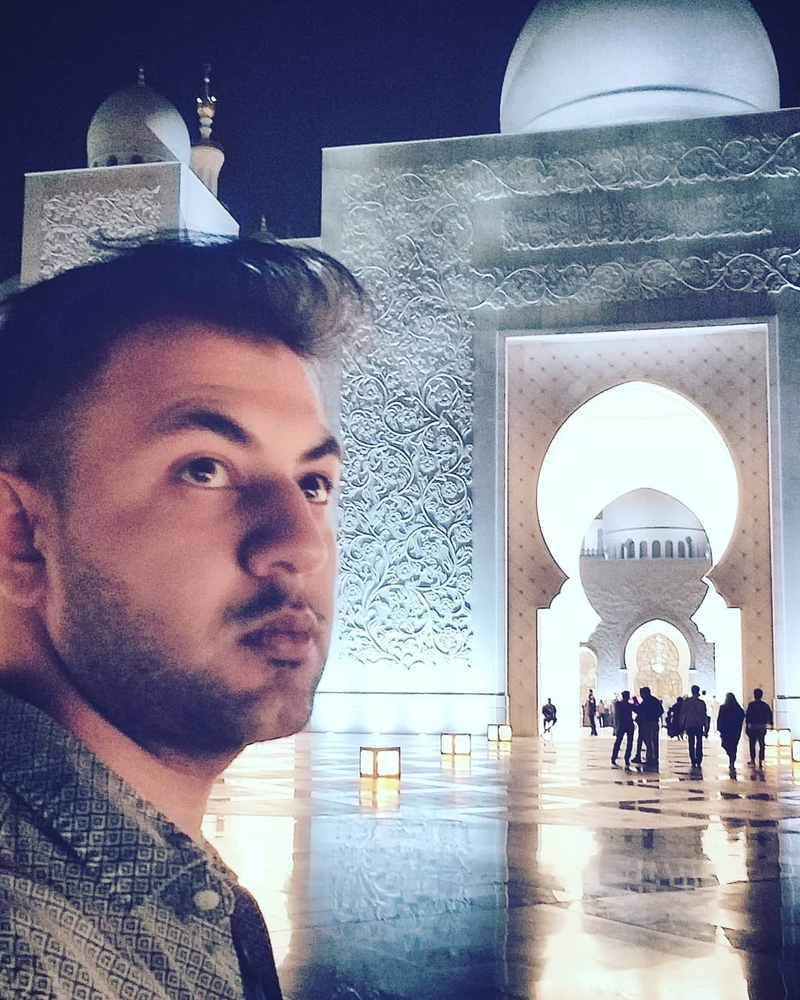
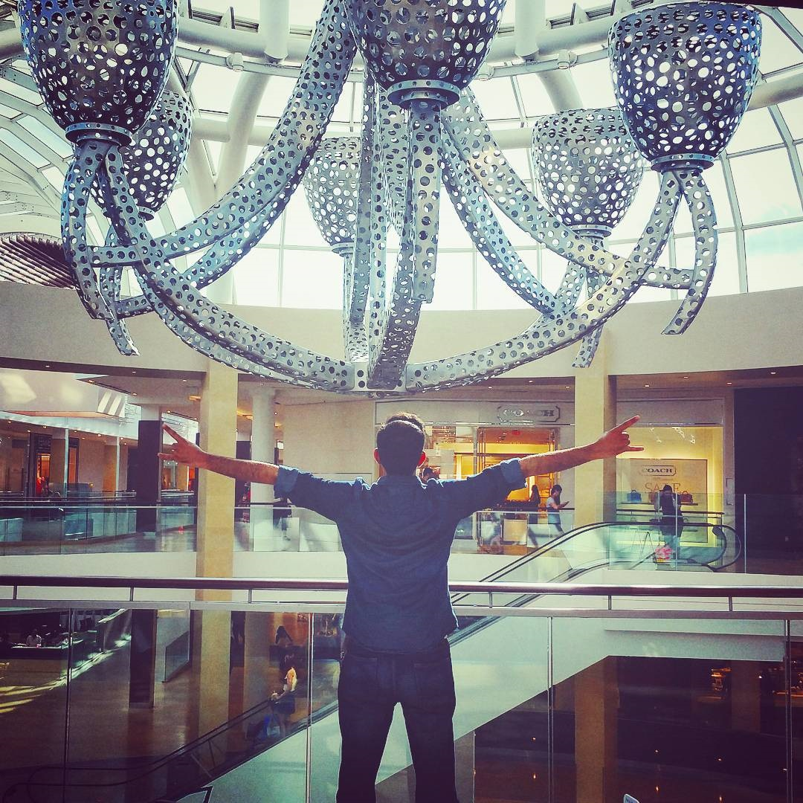

The Hassan II Mosque is a mosque in Casablanca, Morocco.

The Sheikh Zayed Grand Mosque in Abu Dhabi, United Arab Emirates.

Irtaza in (hometown) Mississauga, Ontario, Canada.
My name is Irtaza and I'm a 4th year undergraduate student majoring in computer science at the University of Calgary. I'm completing my program at a mature age therefore it is interesting to see how the world has evolved in such short time sapn.
Originally from Toronto, Ontario which gives birth to the idea that I love to travel. So far, have been to the following cities / countries:
Within Canada:
Toronto
Saskatoon
Calgary
Edmonton
Montreal
Beyond Canada:
United States of America
United Kingdom
Ireland
United Arab Emirates
Dubai
Abu Dhabi
Turkey
Morocco
Kingdom of Saudi Arabia
Pakistan
Thailand
South Korea
The idea is that life is short, actually a little too short. That is why I want to see as much of the world as I can because eventually and gradually I will get an
education and consequently a job to sustain my life as well which is where the enthusiasm of computers comes into play. However I have seen that right after graduation,
students or people get extremely occupied with responsibilities or hyper focused on careers that they don't necessarily enjoy themselves. This is why I could not wait for
that one golden day did what I could so far.
Most people understand the idea of what is meant by 'well educated' but not all understand the notion of 'well traveled'.
It's not just about going and seeing different places, it's about the exposure to many other entities such as cultures, communications, rituals, practice for travel, surprises (in good and bad ways).
By so, one can truly decide whether any place is worth living or not, whether someone is worth talking to or not, whether anything at all is worth it or not.